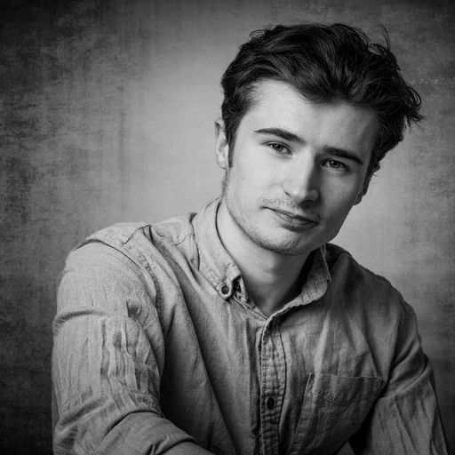

Supermassive black hole binaries do not merge in vacuum. They are embedded in the dense environments of galactic centers, exchanging energy and momentum with the surrounding stars and gas until they spiral together in a gravitational wave-driven merger. Those waves carry the imprint of the environment that shaped them — a signal the upcoming Laser Interferometer Space Antenna (LISA) will detect directly. My research predicts these fingerprints and the physical processes behind them.
Three-dimensional polar-aligned disk. A circumbinary disk settled into a polar configuration, orbiting perpendicular to the binary plane. Shown in three orthogonal projections.
Left: retrograde and prograde disks side by side, showing the cleared cavity of the prograde case against the direct intrabinary flow of the retrograde one. Right: a retrograde disk around an eccentric binary, with the shocked bridge structure between the black holes.
Density response of a gaseous medium to a moving perturber. These play as you scroll.
I'm a postdoctoral researcher at the Institute of Science and Technology Austria, working with Zoltán Haiman on circumbinary disk dynamics and gravitational wave source modelling.
I completed my PhD at the Niels Bohr Institute, University of Copenhagen, with earlier study at NUI Maynooth. My work sits at the intersection between computational and analytical hydrodynamics with gravitational wave astrophysics, with the aim of predicting the dynamics and signatures of black hole binary mergers.
